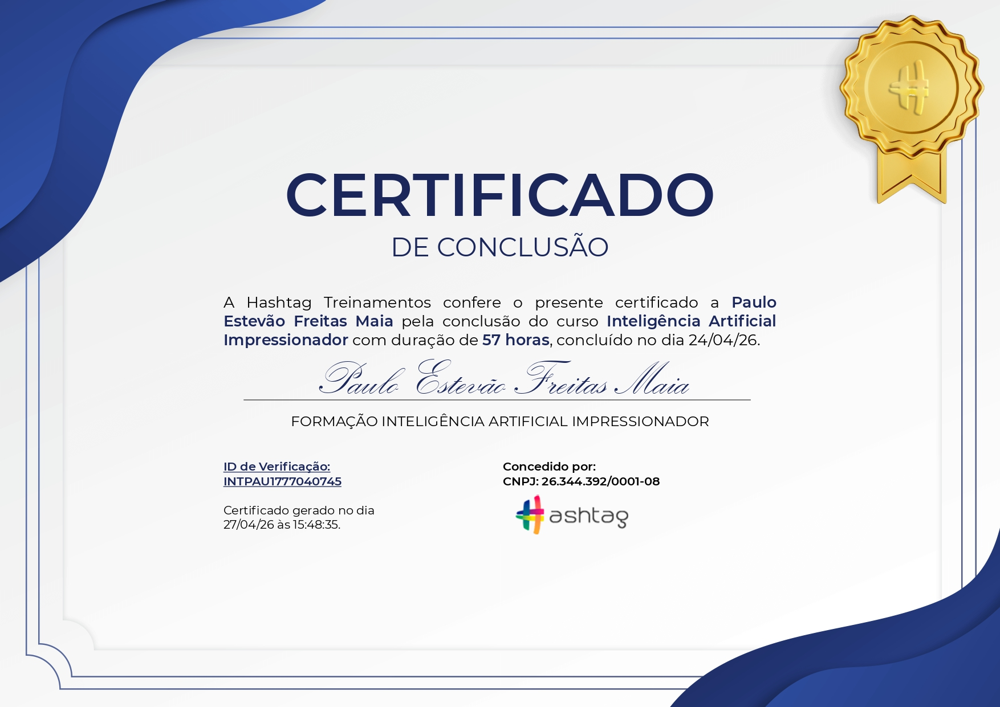

Conheça minha trajetória profissional, principais competências e projetos desenvolvidos. Aqui, compartilho experiências, resultados e parcerias que refletem minha dedicação e evolução ao longo dos anos. Sinta-se à vontade para explorar!
Uma breve introdução sobre mim, minha trajetória e o que tenho a oferecer.
Sou um profissional em constante evolução, movido pela transformação digital.
Iniciei minha trajetória como auxiliar de operações, onde aprendi o valor do trabalho. À medida que fui adquirindo e aplicando conhecimentos, construí uma carreira sólida, impulsionada também pela minha aptidão para a tecnologia. ...
Ao longo dos anos, especializei-me no desenvolvimento de soluções no universo dos dados. Atuo com engenharia e arquitetura de dados, modelagem, integração, construção de pipelines e processos de ELT, além da criação e do aprimoramento de dashboards, automações e aplicações voltadas à performance e à escala.
Tenho domínio de ferramentas e linguagens de programação e amplio essas competências com o uso da inteligência artificial. Por ser autodidata, exploro, testo e aprofundo cada recurso até transformá-lo em uma extensão da minha própria capacidade, adaptando arquiteturas e soluções conforme a necessidade.
Quero continuar aprendendo e me manter constante por meio do estudo, da prática e da busca por formas de gerar mais impacto. Meu objetivo é crescer com propósito e contribuir para a construção de soluções cada vez mais eficientes.
Atuação e competências
Especialidade
Engenharia de Dados, Análise de Dados, Business Intelligence e Inteligência Artificial
Stack principal
SQL, Python, Power BI, BigQuery, Microsoft Fabric, Apps Script, APIs, Git e Codex
Diferencial profissional
Visão estratégica, qualidade de processos, melhoria contínua e adaptação ao contexto
Perfil Profissional
Uma visão organizada das minhas experiências, formações e certificações.
Experiência Profissional
Fundador
PEEXL BI, Dados e Automação | mar. de 2019 – atual | atuação autônoma, remota
Iniciei a atuação com treinamentos práticos de Excel e Power BI, individuais e em grupo; depois ampliei o trabalho para dados, BI, automação e soluções sob medida.
Analiso processos e fontes, realizo diagnósticos, defino a abordagem técnica e desenvolvo modelos, integrações, pipelines, relatórios e automações; acompanho a sustentação das soluções.
Implantei painéis para áreas comercial, financeira, saúde, manutenção e logística; desenvolvi um sistema personalizado e atuei em projetos de migração e recuperação de relatórios.
Trajetória em diferentes empresas
11 anos de experiência | Negócios, processos e tecnologia | ago. de 2015 – set. de 2026 | Brasil
Tecer Terminais, APM Terminals, Tomé Equipamentos e Transportes, Aeris Energy, Up Value Solutions, Grupo Cosampa, Camed Microcrédito e Cysy Fertilizantes.
Evoluí de funções de conferência e apoio administrativo para posições de assistente e analista em logística, operações comerciais e dados.
Trabalhei com controle e melhoria de processos, indicadores e análises, Business Intelligence, integração de fontes e automações para apoiar decisões operacionais e comerciais.
Formação Acadêmica
Análise e Desenvolvimento de Sistemas
Graduação Superior | Tecnólogo
Estácio | Em andamento | set. de 2026 – dez. de 2027 (previsão)
Desenvolvimento e manutenção de sistemas, com foco em lógica de programação, estruturas de dados e performance.
Domínio de bancos de dados, análise de requisitos, arquitetura de software e metodologias ágeis.
Uso de tecnologias atuais, boas práticas e aplicação de segurança da informação.
Engenharia de Dados e Inteligência Artificial
Especialização lato sensu
Estácio | Em andamento | set. de 2026 – dez. de 2027 (previsão)
Estudos em engenharia de dados, integração, processamento e arquitetura de soluções.
As competências estudadas não representam conclusão do curso.
Aplicação prática dos conhecimentos conforme experiência e projetos apresentados.
Certificados e Reconhecimentos

Formação Inteligência Artificial
Hashtag Treinamentos | abr de 2026
A Hashtag Treinamentos confere o presente certificado a Paulo Estevão Freitas Maia pela conclusão do curso Inteligência Artificial Impressionador com duração de 57 horas, concluído no dia 24/04/26. Credencial INTPAU1777040745.